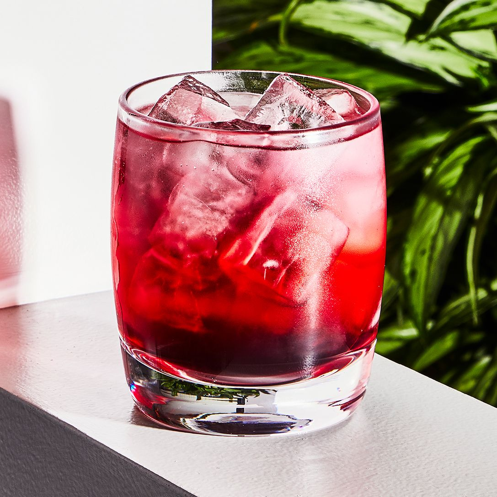

Ginger-Hibiscus Sparkler

Ingredientes
- ¼ xícara de pétalas de hibisco secas
- 1 ½ xícaras de água fervente
- 2 fatias de maçã para decorar
- ½ xícara de licor de gengibre (como Domaine de Canton®)
- ½ xícara de cerveja de gengibre
- 4 ramos de hortelã fresca para decorar
- gengibre fresco, descascado e cortado em fatias finas
Return